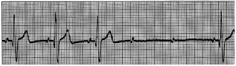
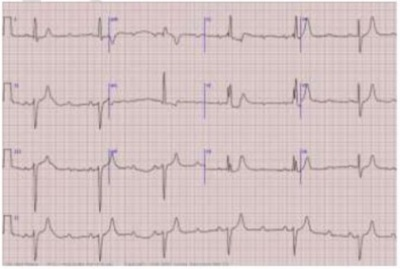
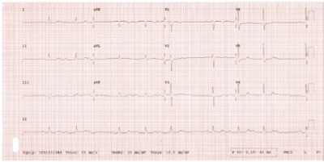
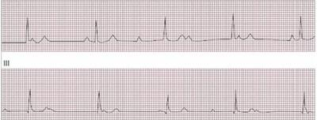
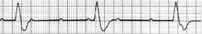
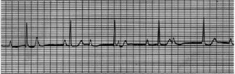
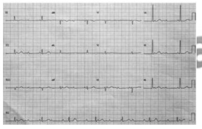
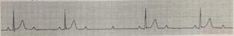
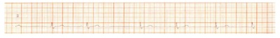
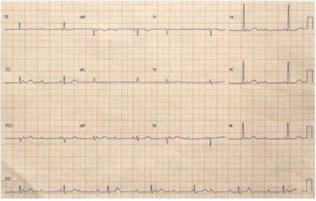

Questão 1 · Distúrbios da condução atrioventricular · 4000186243Paciente masculino, 60 anos, tem PA = 140x85 mmHg e pesa 98 kg. Relata que não está se sentindo bem, seu ECG não tem onda P, com FC = 44 bpm e os complexos QRS ocorrem regularmente. Qual o diagnóstico para essa condição?
A Bloqueio atrioventricular de segundo grau.
B Bloqueio atrioventricular avançado.
C Bloqueio sinoatrial de segundo grau.
D Bloqueio sinoatrial de terceiro grau.
Questão 2 · Bradiarritmias · Bloqueios · 4000184114Homem, 50 anos, hipertenso, em uso de propranolol 120 mg/dia, procura a unidade de pronto atendimento por palpitação há uma semana. O exame clínico é normal, com frequência cardíaca de 56 bpm. O ECG realizado na unidade de saúde está mostrado a seguir. Qual o ritmo cardíaco mostrado no eletrocardiograma?

A BAV de segundo grau Mobitz I.
B Bradicardia sinusal.
C BAV de primeiro grau.
D BAV de segundo grau Mobitz II.
Questão 3 · Bradiarritmias · 4000169916Paciente de 68 anos apresenta quadro progressivo de dispneia. Hoje, apresentou quadro de tontura seguida de síncope. O traçado do ECG está a seguir: Nesse momento, com relação ao diagnóstico e à respectiva conduta, é correto afirmar:

A bradicardia sinusal, dopamina em infusão contínua.
B bloqueio atrioventricular de 1º grau, bolus de atropina.
C bloqueio atrioventricular de 2º grau Mobitz I, bolus de atropina.
D bloqueio atrioventricular de 2º grau Mobitz II, colocação de marca-passo externo.
E bloqueio atrioventricular, colocação de marca-passo externo.
Questão 4 · Distúrbios da condução atrioventricular · 4000169763Paciente em recuperação, na UTI, na Ia hora após revascularização miocárdica, em ventilação mecânica, com marcapasso temporário. Seu médico cardiologista resolve testar o grau de dependência do marca-passo epimiocárdico, que está em 70 bpm e com captura ventricular adequada. Ao ser desligado o gerador do marca-passo, o médico verifica, no monitor, que o gráfico do pulso venoso jugular passa a demonstrar uma onda a “em canhão”. Ao olhar para o monitor cardíaco, ele observa que o traçado eletrocardiográfico passou a demonstrar a presença de
A Bradicardia sinusal.
B Flutter atrial.
C Bloqueio atrioventricular total.
D Bloqueio 1 grau.
Questão 7 · Bradiarritmias · Abordagem inicial das bradiarritmias · 4000145992Mulher, 63 anos de idade, admitida na sala de emergência com quadro de confusão mental e letargia há duas horas. Relatou também episódio de tontura ao se levantar da cama. Previamente independente para atividades básicas e instrumentais da vida diária. Com diagnóstico de hipertensão arterial sistêmica há 10 anos, infarto agudo do miocárdio há 3 anos. Faz uso de amlodipina 10mg por dia, AAS 100mg por dia e atorvastatina 40mg por dia. Ao exame clínico: abertura ocular ao chamado, resposta verbal confusa e obediência aos comandos. Frequência cardíaca: 38 batimentos/minuto; pressão arterial: 92 x 66 mmHg; frequência respiratória: 20 incursões/minuto; Saturação de O2: 96% em ar ambiente. Sem outras alterações. Foi obtido um eletrocardiograma de 12 derivações, reproduzido a seguir: Qual é a primeira conduta terapêutica que deve ser adotada neste momento?

A Noradrenalina 0,1 mcg/kg/min por via intravenosa em infusão contínua.
B Dopamina 1 mcg/kg/min por via intravenosa em infusão contínua.
C Adrenalina 1mg administrada por via intravenosa em bolus.
D Atropina 1mg administrada por via intravenosa em bolus.
Questão 8 · Bradiarritmias · Eletrocardiograma · 4000145991Mulher, 63 anos de idade, admitida na sala de emergência com quadro de confusão mental e letargia há duas horas. Relatou também episódio de tontura ao se levantar da cama. Previamente independente para atividades básicas e instrumentais da vida diária. Com diagnóstico de hipertensão arterial sistêmica há 10 anos, infarto agudo do miocárdio há 3 anos. Faz uso de amlodipina 10mg por dia, AAS 100mg por dia e atorvastatina 40mg por dia. Ao exame clínico: abertura ocular ao chamado, resposta verbal confusa e obediência aos comandos. Frequência cardíaca: 38 batimentos/minuto; pressão arterial: 92 x 66 mmHg; frequência respiratória: 20 incursões/minuto; Saturação de O₂: 96% em ar ambiente. Sem outras alterações. Foi obtido um eletrocardiograma de 12 derivações, reproduzido a seguir: Quais são os diagnósticos eletrocardiográficos?

A Bloqueio atrioventricular de 2° grau Mobitz tipo II, bloqueio de ramo direito e bloqueio da divisão ântero-superior.
B Bloqueio atrioventricular de 2° grau Mobitz tipo I, bloqueio de ramo esquerdo e área elétrica inativa de parede inferior.
C Bloqueio atrioventricular de 2° grau Mobitz tipo I, bloqueio de ramo direito e bloqueio da divisão ântero-superior.
D Bloqueio atrioventricular de 2° grau Mobitz tipo II, bloqueio de ramo esquerdo e área elétrica inativa de parede inferior.
Questão 9 · Bradiarritmias · 4000141972A indicação de marcapasso definitivo nos bloqueios atrioventriculares são todos abaixo,
A BAV do 2ºgrau do tipo 2 ou mobitz 2
B BAV do 2º grau do tipo 2:1
C BAV do 3ºgrau
D BAV do 2º grau do Tipo 1 ou mobitz 1
Questão 10 · Disf unção do nodo sinusal · 4000141969Assinale a alternativa que não faz parte da doença do nó sinusal:
A Síndrome bradicardia-taquicardia
B Pausa sinusal
C Taquicardia por reentrada nodal
D Bradicardia sinusal
Questão 12 · Distúrbios da condução atrioventricular · Cardiologia · 4000140607Mulher de 58 anos de idade vem à unidade básica de saúde pois apresentou quadro de escurecimento visual durante prática de atividade física. Não houve perda da consciência. Não tem antecedentes mórbidos relevantes. No exame clínico, frequência cardíaca 58 bpm. O restante do exame clínico é normal. Realizou o eletrocardiograma apresentado a seguir. Qual é a conclusão do laudo do eletrocardiograma?

A Eletrocardiograma normal.
B Fibrilação atrial de baixa resposta ventricular.
C Bloqueio atrioventricular de 2º grau, Mobitz I.
D Bradicardia sinusal.
Questão 13 · Bradiarritmias · 4000140420Paciente do sexo masculino, 69 anos, com antecedente de hipertensão arterial, diabetes mellitus tipo 2, doença do re uxo gastroesofágico, depressão e demência procurou o pronto-socorro com quadro de fraqueza e tontura há 1 hora. Estava em uso de enalapril, atenolol, metformina, AAS, pantoprazol e amitriptilina. Na ocasião, seus sinais vitais eram PA: 140 80 mmHg, FC: 42 bpm, FR: 16 ipm, SatO2: 98%, dextro: 150 mg/dL. Realizou o ECG abaixo. Diante do caso clínico e ECG, o diagnóstico e sua causa mais provável:

A Bloqueio atrioventricular do 1o grau − Uso de pantoprazol.
B Bloqueio atrioventricular do 2o grau Mobitiz 1 − Uso de atenolol.
C Bloqueio atrioventricular do 3o grau − Uso de amitriptilina.
D Bloqueio atrioventricular do 2o grau Mobitiz 2 − Uso de metformina.
E Bloqueio atrioventricular do 3o grau − Uso de enalapril.
Questão 14 · Bradicardia estável · 4000114121O diagnóstico eletrocardiográfico e a melhor conduta a ser tomada seriam:

A Bradicardia sinusal; adrenalina 1mg IV em bolus.
B Bloqueio atrioventricular de segundo grau tipo I; chamar especialista.
C Bloqueio atrioventricular total; marcapasso transcutâneo.
D Bloqueio atrioventricular total; Dobutamina IV.
Questão 15 · Classif icação · Abordagem inicial das bradiarritmias · 4000112863Paciente de 73 anos de idade refere quadro de tontura há 3 dias, sobretudo, ao levantar-se. O eletrocardiograma realizado é mostrado a seguir. Com esses dados, é correto afirmar que

A pode ser consequência do uso de medicamentos, por exemplo, betabloqueadores,verapamil ou amiodarona.
B pode ser secundário a distúrbio metabólico, por exemplo, hipercalemia, hipercalcemiaou hipernatremia.
C pode ser uma síncope reflexa (vasovagal), e o exame de escolha é o teste de inclinaçãoortostática (tilt table test).
D se recomenda pedir exames laboratoriais, radiografia de tórax, Holter eecocardiograma, com retorno em 2 semanas.
E sugere o diagnóstico de hipotensão postural, sendo recomendado o aumento daingestão de sal e líquido.
Questão 16 · Bradicardia estável · 4000103525Paciente de 54 anos apresenta quadro de tontura e repetidas síncopes há uma semana, aproximadamente. O traçado do monitor está abaixo. Neste momento, a conduta mais adequada é

A Infusão contínua de epinefrina 10 mcg/minuto
B Atropina 1mg
C Colocação de marcapasso externo
D Infusão continua de dopamina 10 mcg/kg/minuto
Questão 17 · Bloqueios · 4000042660Paciente feminina, 06 anos, será submetida à cirurgia eletiva e ao ser examinada notou-se ritmo cardíaco irregular, sem outros sinais ou sintomas. Feito ECG que demonstrou: Baseado na história e ECG, o diagnóstico provável é:

A Arritmia sinusal.
B Bloqueio AV de segundo grau.
C Bloqueio AV de primeiro grau.
D Escape juncional por provável distúrbio eletrolítico.
Questão 18 · Distúrbios da condução atrioventricular · Bloqueios · 4000014510Paciente de 84 anos, evoluindo com quadros de síndromes convulsivas tônicoclônicas de repetição, que se iniciam ao repouso, não acompanhadas de liberação es ncteriana. Procurou consultório do cardiologista, onde chegou deambulando normalmente e, no meio da consulta, apresentou uma síncope, seguida de crise convulsiva. Nesse momento, foi realizado eletrocardiograma abaixo, que confirmou o diagnóstico:

A Bloqueio átrio-ventricular avançado alternante.
B Bloqueio átrio-ventricular do segundo grau.
C Bloqueio átrio-ventricular do tipo 2:1.
D Bloqueio átrio-ventricular do primeiro grau.
E Bloqueio átrio-ventricular total.
Questão 19 · Antiarrítmicos · Bradicardia sinusal · 4000124581Qual das drogas abaixo não desencadeia bradicardia?
A Atenolol
B Digoxina
C Amiodarona
D Anlodipino
Questão 20 · Doença de Chagas · Distúrbios da condução atrioventricular · Abordagem inicial das bradiarritmias · 4000109823Emília, 48 anos, natural de Santarém/PA, tem queixas de palpitações há tempos, com piora nos últimos dois meses. Apresentou dois episódios de síncope nesse período e deu entrada no serviço de emergência com queixas de astenia, tontura, turvação visual, falta de ar, inchaço nas pernas e desconforto torácico. Observe o ECG abaixo e indique qual a possível causa dos sintomas e a melhor conduta inicial.

A Insuficiência cardíaca congestiva descompensada. Digital, IECA, betabloqueador, espironolactona e furosemida.
B Síndrome coronariana aguda. Internação com dupla antiagregação, anticoagulação, estatina e cateterismo.
C Cardiopatia Chagásica com dissociação atrioventricular. Marcapasso.
D Taquicardia atrial com algumas extrassístoles atriais bloqueadas. Amiodarona.
Questão 21 · Bradiarritmias · 4000100827Paciente de 67 anos refere tontura, mal-estar e dispneia. Também ter tido no passado três IAM. A PA encontra-se em 90x50 mmHg. O traçado do monitor cardíaco está abaixo. O diagnóstico e a conduta a serem tomadas neste momento, são:

A BAV de segundo grau Mobitz 1 e administração de atropina 1 mg.
B BAV de primeiro grau e administração de atropina 1 mg.
C BAV de terceiro e colocação de marca-passo.
D BAV de segundo grau Mobitz 2 e colocação de marca-passo externo.
Questão 22 · Bradicardia instável · 4000027897Paciente de 62 anos, com quadro de síncope, confusão mental e dispnéia. Ao exame apresenta uma PA de 70x30mmHg e FC de 32 batimentos por minuto. A instabilidade é devida a arritmia. Considerando este cenário, são condutas adequadas a serem tomadas, EXCETO:
A Solicitar Marcapasso Provisório Transcutâneo (MPTC).
B Iniciar dopamina em bomba de infusão contínua.
C Iniciar adrenalina na dose de 6 microgramas por minuto.
D Iniciar amiodarona na dose de 0,5 miligrama por minuto.
Questão 23 · Alterações eletrocardiográf icas mais comuns · 4000013996Considerando o ritmo eletrocardiográfico apresentado na figura precedente - derivação: D2; velocidade do papel 25 mm/seg; calibração: 1cm = 1 mV - , julgue o seguinte item. A arritmia observada nessa tira de ritmo é a extrassístole supraventricular com pausa compensatória.

A Certo.
B Errado.
Questão 24 · Bradicardia instável · 4000116635Paciente masculino, de 82 anos, queixa-se de tontura e cansaço há 2 dias. Hoje, apresentou queda da própria altura ao se levantar. Antecedente pessoal: hipertensão arterial, em uso de metoprolol e hidroclorotiazida. Realizou o ECG a seguir: (Conforme imagem do caderno de questões) Nesse caso, a conduta CORRETA é:

A Realizar cateterismo cardíaco.
B Suspender hidroclorotiazida e repor potássio.
C Realizar estudo eletrofisiológico.
D Inserir marca-passo temporário.
E Realizar cintilografia eletiva.
Questão 25 · Indicações de marcapasso def initivo · Distúrbios da condução atrioventricular · 4000111203Paciente diabética (mas não hipertensa) refere ao geriatra que a acompanha que, há um ano, vem apresentando piora da astenia, desânimo intenso e, por 2 vezes, perdeu a consciência enquanto assistia à televisão. Durante a investigação, evidenciando o ritmo cardíaco da paciente, demonstrado no traçado abaixo (Conforme imagem do caderno de questão). Qual a conduta a ser tomada?

A Realização de cardioversão elétrica.
B Início de medicação antirrítmica.
C Observação clínica com Holter a cada 6 meses.
D Implante de marcapasso definitivo.
Questão 26 · Bradiarritmias · 4000106076Você avalia uma paciente de 42 anos de idade com bradicardia na sala de emergência. Realizado o eletrocardiograma abaixo. Qual o diagnóstico eletrocardiográfico?

A Bloqueio atrioventricular Mobitz I.
B Bloqueio atrioventricular Mobitz II.
C Bradicardia sinusal com escape.
D Bloqueio atrioventricular total.
Questão 27 · Hipotermia · Bradicardia sinusal · 4000105835Mulher, 89 anos de idade, sofreu uma fratura de quadril e foi submetida à cirurgia para correção. Na recuperação pós- anestésica a paciente desenvolve bradicardia sinusal, com uma frequência cardíaca = 46 batimentos/minuto e temperatura corporal aferida de 35 graus centígrados. Pressão arterial é de 110 x 72 mmHg. Qual é o tratamento apropriado para a bradicardia desta paciente?
A Atropina.
B Inserção de um marca-passo temporário.
C Aquecer a paciente.
D Adrenalina.
E Transfusão de 2 unidades de hemácias.
Questão 28 · Bradiarritmias e bloqueios atrioventriculares · 4000106699Paciente masculino de 58 anos é admitido à sala de emergência com IAM de parede inferior associado ao bloqueio atrioventricular do 3° grau, com escape juncional. O intervalo de tempo entre o início da dor e a chegada ao hospital foi de 50 minutos. Assinale o mecanismo mais provável do bloqueio atrioventricular:
A Isquemia da artéria do nódulo atrioventricular.
B Vagal.
C Doença de Lenègre.
D Doença de Lève.
E Hiperaldosteronismo secundário.
Questão 29 · Bradiarritmias · Abordagem inicial das bradiarritmias · 4000097578Homem, 72 anos, queixa-se de tontura e cansaço há 2 dias. Hoje, apresentou queda da própria altura ao se levantar. Antecedente pessoal: hipertensão arterial em uso de metoprolol e hidroclorotiazida. Realizou ECG. (VER IMAGEM) A conduta é:

A Realizar cateterismo cardíaco.
B Suspender hidroclorotiazida e repor potássio.
C Realizar estudo eletrofisiológico.
D Inserir marca-passo temporário.
Questão 30 · Distúrbios da condução atrioventricular · 4000031190Assinale a alternativa que caracteriza o bloqueio atrioventricular de 3º grau. Respostas: 1 12 23
A Aumento fixo do intervalo PR.
B Aumento progressivo do intervalo PR até interrupção do estímulo, com onda P sem preceder o complexo QRS.
C Ocorre interrupção da condução AV sem prévio alongamento do intervalo PR.
D Toda onda P é seguida de complexo QRS.
E Inexistência de relação entre atividade atrial e ventricular.